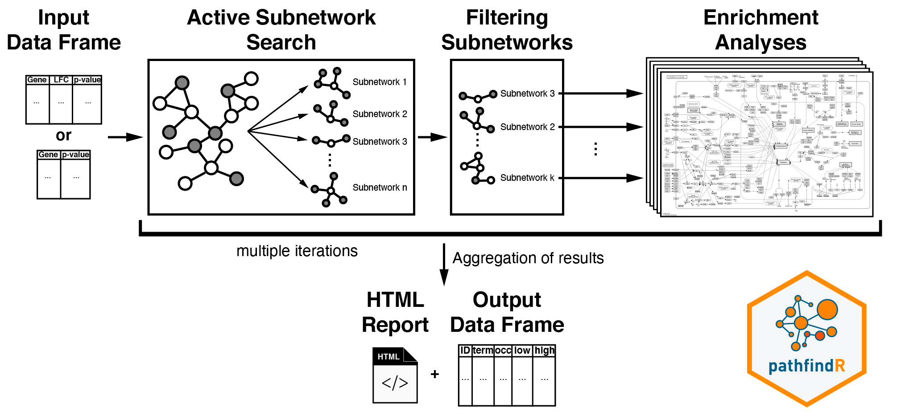

Pathway Enrichment
Bastian Schiffthaler
On the Choice of Database
KEGG: Kyoto Encyclopedia of Genes and Genomes (https://www.kegg.jp/)

- Comprehensive database of pathways
- Support for numerous models built in
- Non models can be inferred via e.g. BLAST
REACTOME
- Comprehensive database of pathways
- Support for humans only
- Extremely well supported web interface
On the Statistics
Statistical Approaches

- ORA: Overenrichment Analysis
- FCS: Functional Class Scoring
- PT: Pathway Topology Analysis
Overenrichment Analysis
packages: clusterProfiler, ReactomePA, DOSE
- Given a set of genes, how high is the probability that N genes are annotated to pathway t
- Similar to poker: e.g. given a deck of 52 cards, what is the probability to draw exactly 4 fives in a hand of 5.
What's the probability to draw at least two fives
Extending to genes
- population $m$ (background): our deck of cards
- study $n$: our hand (five cards)
- population term set $m_t$: number of aces in the deck
- study term set $n_t$: number of aces in our hand
Steffen Grossmann, Sebastian Bauer, Peter N. Robinson, Martin Vingron, Improved detection of overrepresentation of Gene-Ontology annotations with parent–child analysis, Bioinformatics, Volume 23, Issue 22, 15 November 2007, Pages 3024–3031, https://doi.org/10.1093/bioinformatics/btm440
Why the Background Matters
- Imagine we only use 30 randomly chose cards
- How high is the probability now? (depends)
- In your RNA-Seq experiment, are all annotated genes able to be sampled/drawn?

https://www.nature.com/articles/d41586-018-05462-w
Functional class scoring
packages: clusterProfiler, fgsea, ReactomePA, DOSE
- Consider some numerical value as opposed to just a plain set
- Most often: log2FC
- Permutation test to estimate $p$
GSEA

Subramanian et al. Proceedings of the National Academy of Sciences Oct 2005, 102 (43) 15545-15550; DOI: 10.1073/pnas.0506580102
Pathway Topology Analysis
Packages: SPIA
- Consider pathway topology
- Different genes in pathways have varying gravity
SPIA: Signal Pathway Impact Analysis
- Combine hypergeometric analysis with perturbation
- Two result metrics
- pNDE: hypergeom probability to have N genes in pathway
- pPERT: probability to observe pertubation as extreme by chance
- pPERT is a combination of DE (fold change) and position in the pathway
Tarca, A. L., Draghici, S., Khatri, P., Hassan, S. S., Mittal, P., Kim, J. S., Kim, C. J., Kusanovic, J. P., & Romero, R. (2009). A novel signaling pathway impact analysis. Bioinformatics (Oxford, England), 25(1), 75–82. https://doi.org/10.1093/bioinformatics/btn577
Other approaches: pathfindR
- Combined protein interaction networks (PPI) and ORA
- For human: single function (a la
DESeq())
